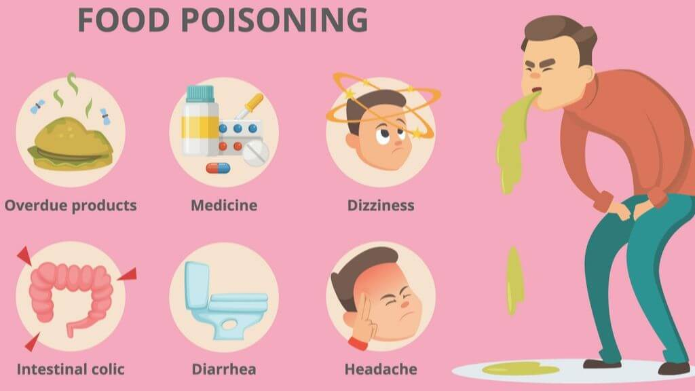

Recipe for Disaster

poor hygine and lack of common sense is all you need for this recipe
I recently read an article about someone who died 10 hours after eating 5
day old pasta they had meal prepped and left sitting at room temperature.
That prompted this recipe of DOs and
DONTs to cook up disaster.
DO
- Eat 5 day old pasta that's been kept at room temperature...
-
Accept random mushrooms from a sketchy stranger at a festival... what
could go wrong
-
Eat random things you off a busy NYC sidewalk-- New yorkers are tough
for a reason
DON'T
- Wash your hands before or after cooking, or ever...
-
Store foods in the refrigerator--our ancestors didn't need that shit
- pay attention to experation dates, or traffic, or your girlfriend